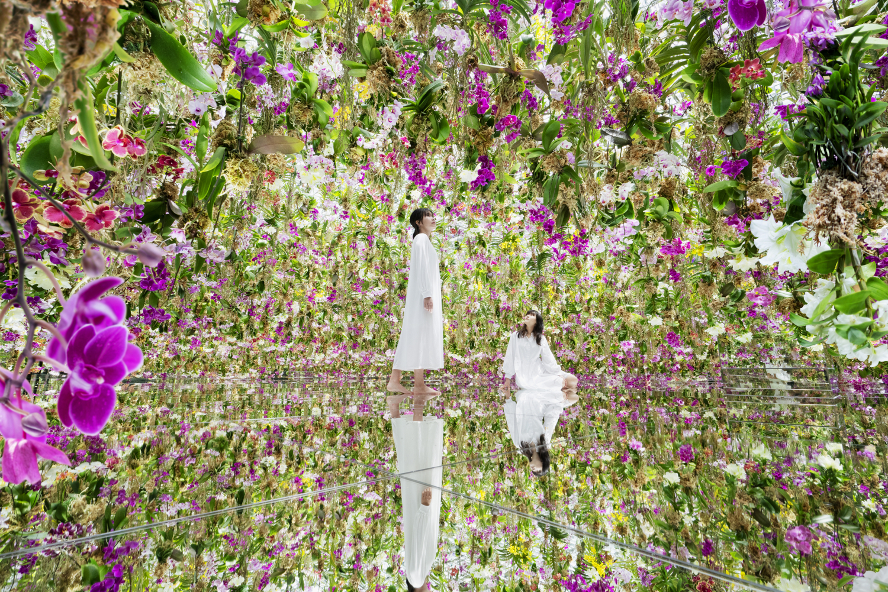
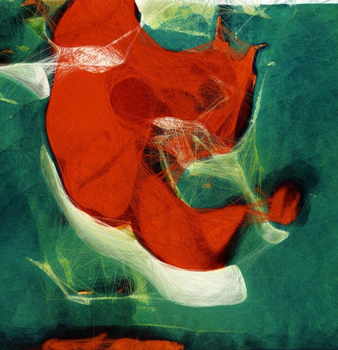
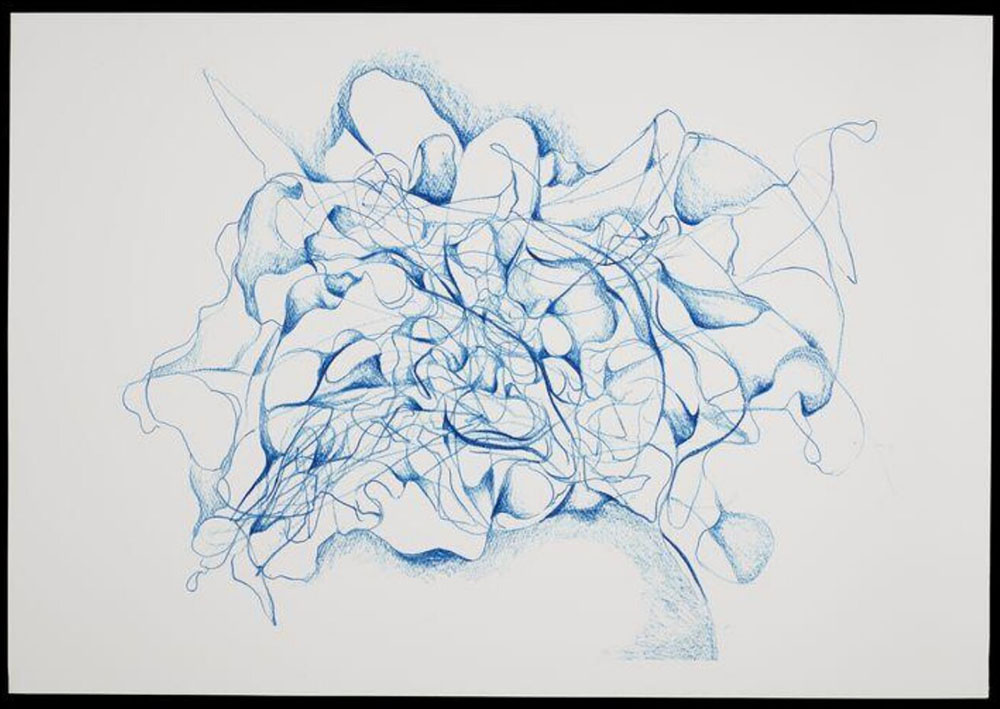
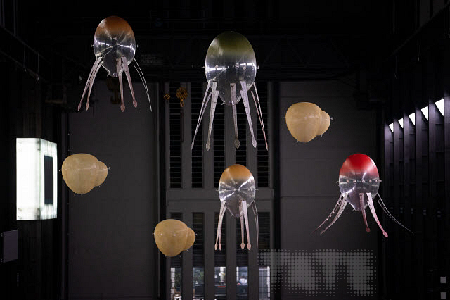

Exhibition 1: Dissolved Boundaries
What happens when an artwork responds to your presence — when you stop being a viewer and become part of the work itself? Dissolved Boundaries brings together teamLab and Refik Anadol, two forces redefining how we experience art through data, light, and immersion. Together, their works ask: where does the artwork end and the world begin?

teamLab, Forest of Flowers and People: Lost, Immersed and Reborn, 2017. Installation view, teamLab Borderless, Tokyo. © teamLab, courtesy Pace Gallery. Via Wikimedia Commons.
teamLab (f. 2001)
An international art collective of artists, programmers, engineers, and architects, teamLab creates room-scale digital installations where every visitor becomes a living participant. In Forest of Flowers and People, flowers bloom and scatter in real time in response to human presence — no two moments, and no two visits, are ever the same.

Refik Anadol, Unsupervised — Machine Hallucinations — MoMA, 2022. Installation view, The Museum of Modern Art, New York. Documentation by Refik Anadol Studio. © Refik Anadol Studio.
Refik Anadol (b. 1985)
Turkish-American media artist Refik Anadol uses machine learning to transform vast datasets into living, breathing sculptures. His landmark piece Unsupervised at MoMA fed over 200 years of the museum's collection through a neural network, producing an endlessly shifting hallucination — what a machine might dream after seeing all of modern art.
Exhibition 2: Organic Machines
Can a machine learn to draw like you? Can a drone behave like a living creature? Organic Machines pairs Sougwen Chung and Anicka Yi — two artists who collapse the boundary between the biological and the computational. Their works don't just depict living systems; they become them.

Sougwen Chung, Drawing Operations Unit: Generation 2 (MEMORY), 2017. Performance documentation. © Sougwen Chung. Acquired by the Victoria and Albert Museum, London (Museum no. E.907-2022).
Sougwen Chung (b. 1985)
Canadian-Chinese artist and researcher Sougwen Chung has spent a decade collaborating with robotic systems she builds and trains on her own drawing gestures. In MEMORY, a robotic arm trained on twenty years of her personal drawings performs alongside her in real time — part mirror, part partner, part memory made mechanical.

Anicka Yi, In Love with the World, 2021. Hyundai Commission, Tate Modern, London. Installation view. © Anicka Yi. Photo courtesy Tate Modern.
Anicka Yi (b. 1971)
Seoul-born conceptual artist Anicka Yi merges biology, scent, and artificial intelligence into works that feel genuinely alive. For In Love with the World, she filled the Tate Modern's Turbine Hall with AI-guided "aerobes" — translucent, jellyfish-like drones that drifted, nested, and navigated the hall as if they were their own species, emitting scents drawn from the history of London's Bankside.